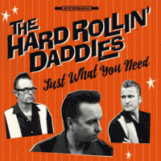

the Hard Rollin' Daddies - Just What You Need (Album, 2017)
01 - I've Changed My Ways (2:54)
02 - Who Told On Me? (3:49)
03 - When You Were Fine (2:36)
04 - Back-up Plan (4:53)
05 - Honey, I'm Home (2:34)
06 - She's Single Again (2:50)
07 - Nine Times Out Of Ten (2:07)
08 - I Couldn't Leave You If I Tried (3:29)
09 - Naughty Gir (3:13)
10 - You'll Still Be Ugly Tomorrow (2:27)
11 - Rebel Without A Tattoo (3:14)
12 - Wishing Star (3:48)
13 - Where's My Gretsch Guitar? (2:56)
14 - Magic Fingers (2:17)
© Bfs Records :: [-]
Notes
Review
363/366 (Project 366)
Spectacular Rockabilly Rock'n'Roll of a Norwegian taste. Very curious lyrics, very cool guitar, attractive and spirited vocals, different moods. With an eye to classic, traditional and popular techniques, but in a very peculiar form. And also the atmosphere is very picturesquely conveyed (for example, how the instrumental "Honey, I'm Home" sounds). In general, quite a modern way of doing straight sound. With refined casualness and nice style. The ease with which the songs flow is very surprising. Also a good tracklist that while keeping its own feel - contains variety and a range of interesting numbers.